Identifying high confidence structural variants in the human genome with Machine Learning
Lesley Chapman
Github lesleymaraina
Overview
- Background/Motivation
- Data Analysis Pipeline
- Results
- Future Direction
Background
Structural Variants
- Structural variants are defined as alterations of DNA segments
- Structural variants are implicated in numerous diseases and make up the majority of varying nucleotides among human genomes
- SVs are prone to arise in repetitive regions
- Efforts to perform discovery, genotyping, and statistical haplotype-block integration of all major SV classes are lacking
- 1000 Genomes Project - Structural Variation Analysis Group defines SVs as DNA variants >= 50bp
Feuk, L. et al (2006) Nature Reviews
Sudmant, P. et al (2015) Nature
Baker, M. et al (2012) Nature Methods
SV Discovery Overview
Previous Studies
- Studies have shown that there are thousands of differences between variant calls from different whole human genome sequencing methods and bioinformatics methods
- High-confidence set of genome wide genotype calls can be used as a benchmark
- Zook et al (2014) generated a high confidence benchmark set of small variants (SNPS and indels) for NA12878
Central Aim
The goal of this project is to analyze Next Generation Sequencing (NGS) data in order to generate a high confidence list of structural variants (SVs) within the human genome.
Data
| Genome | PGP ID | Coriell ID | NIST ID | NIST RM # |
| AJ Son | huAA53E0 | GM24385 | HG002 | RM8391(son) | RM8392 |
| AJ Father | hu6E4515 | GM24149 | HG003 | RM8392(trio) |
| AJ Mother | hu8E87A9 | GM24143 | HG004 | RM8392(trio) |
- SVs >= 20bp
- 300000+ candidate variants derived from 5 sequencing technologies
Dataset Sources
| Technology | Read Length | Read Depth |
| Illumina HiSeq 2500* | 148bp | 296.83x |
| Illumina HiSeq 2500* | 2x250bp | 40-50x |
| Illumina Mate Pair* | 2x100bp(insert size:6000bp) | 13-14x |
| 10X Genomics* | 2X98bp | 50x HG002 | 22x HG003 | 24x HG004 |
| PacBio* | 10-11Kb | 69x HG002 | 30-32x HG003/HG004 |
| BioNano Genomics | 195Kb HG002 | 246Kb HG003 | 213Kb HG004 | 112x HG002 | 87x HG003 | 92x HG004 |
| Complete Genomics(CG) | 26bp | 100x |
* Datasets optimized for SVVIZ
Variant Callers
Illumina
- Spiral (now only small have sequence)
- Fermikit (now only small have sequence)
- Cortex
- GATK (small)
- Freebayes (small)
- Pindel
- manta
- MetaSV (when possible)
PacBio
- MSPacMon
- Assemblytics (2)
CG (small)
10x(2)
Analysis Overview
- Assign labels (Genotype[+/+, +/-, -/-] or unknown) to 300000 candidate variants
- Generate labels for breakpoint and SV sequence accuracy
Strategy
- Sample dataset (5K INS and 5K Del)
- Goal 1: Generate labeled data
- Goal 2: Establish an analysis pipeline
- Assign labels to the remaining datapoints
Analysis Approach
Preliminary Results
Data Preprocessing
kNN and Missing Values
kNN Distributions
Deletions
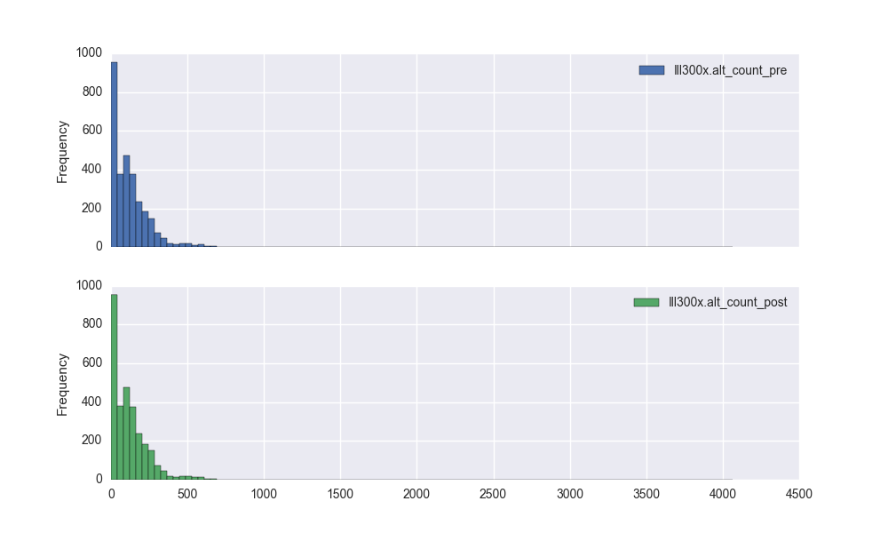Distribution comparison for Ill300x.alt_alnScore_std: Ks_2sampResult(pvalue=1.0000000000000002)
Insertions
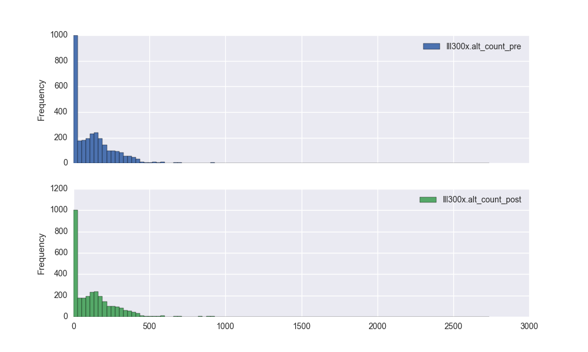Distribution comparison for Ill300x.alt_alnScore_std: Ks_2sampResult(pvalue=0.99999999999999989)
EDA

t-Distributed Stochastic Neighbor Embedding(tSNE)
Dimensionality Reduction Overview
- Data visualization techniques used to display the structure of the data
- methods that preserve a significant structure of a high-dimensional dataset in a low-dimensional space
- Linear and Non-linear dimensionality reduction techniques
- Linear: maintain large pairwise distances in a low dimensional space [i.e.: Principal Components Analysis (PCA) and Multidimensional Scaling(MDS)]
- Non-linear: preserves small pairwise distances - points and their nearest neighbors in a low dimensional space [i.e.: stochastic neighbor embedding(SNE) and t-Distributed SNE]
- PCA/MDS > Isomap > SNE > tSNE
Linear vs. Non-Linear Reduction
tSNE Overview
tSNE: Approach
- Truncated Singular Value Decomposition(SVD)
- tSNE 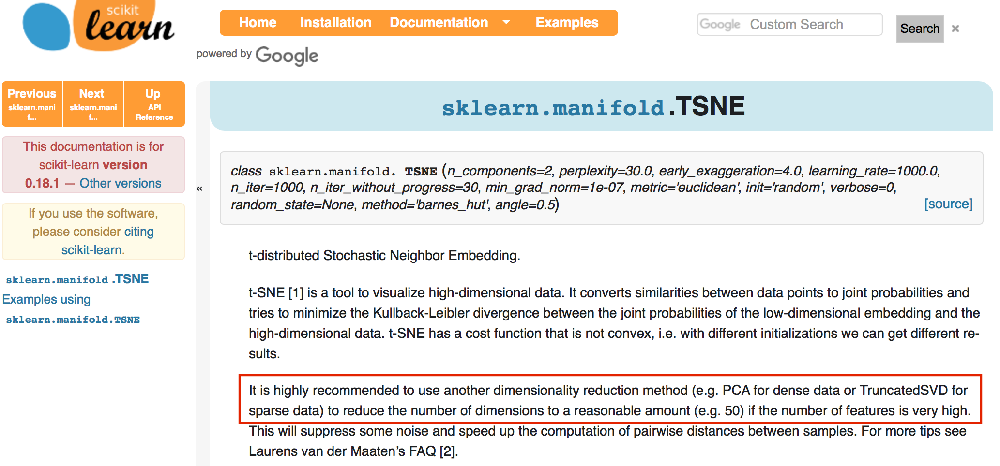
SVD Explained Variance
Deletions
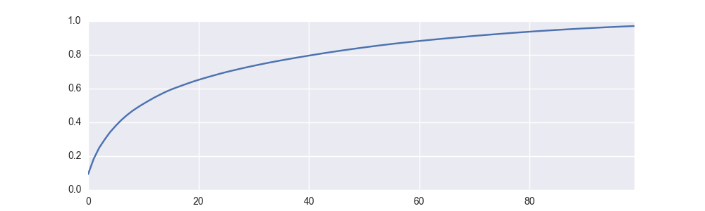SVD Explained Variance
Insertions
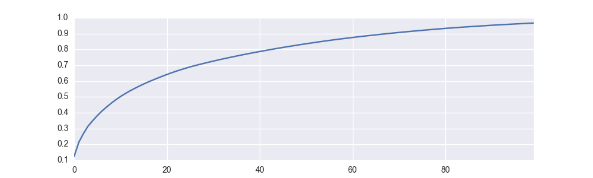Pair Plot
Deletions
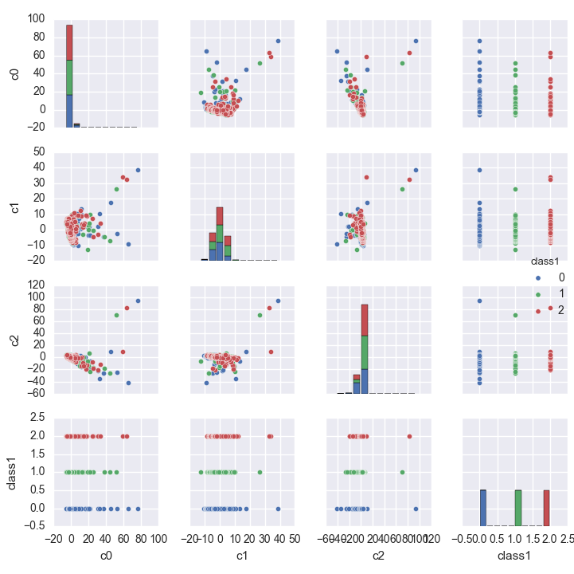Insertions
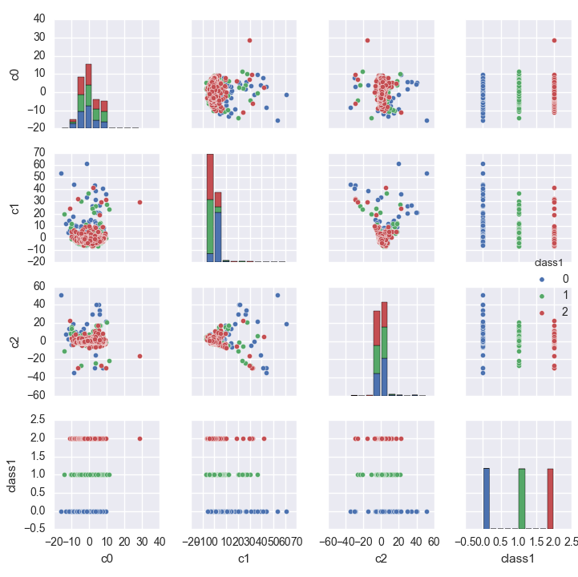TSNE: Deletions
GTCons
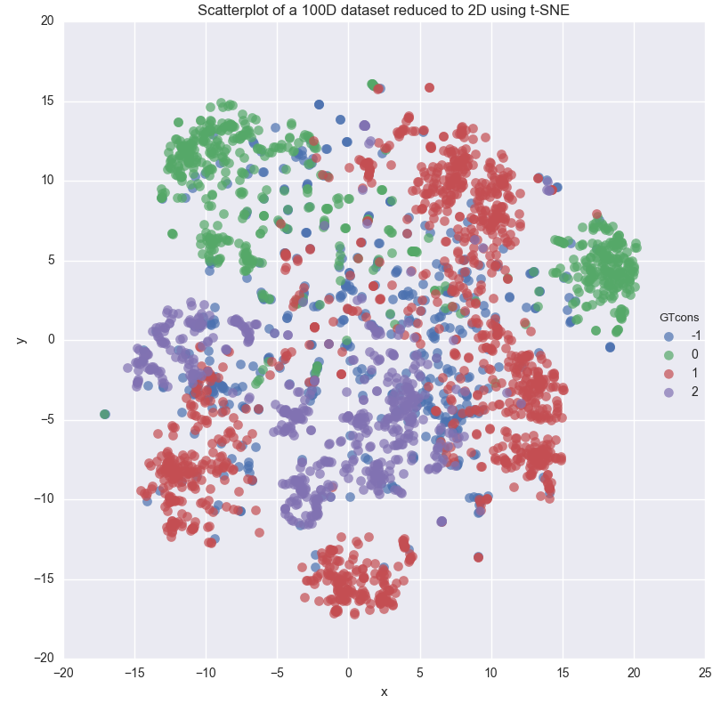Sample
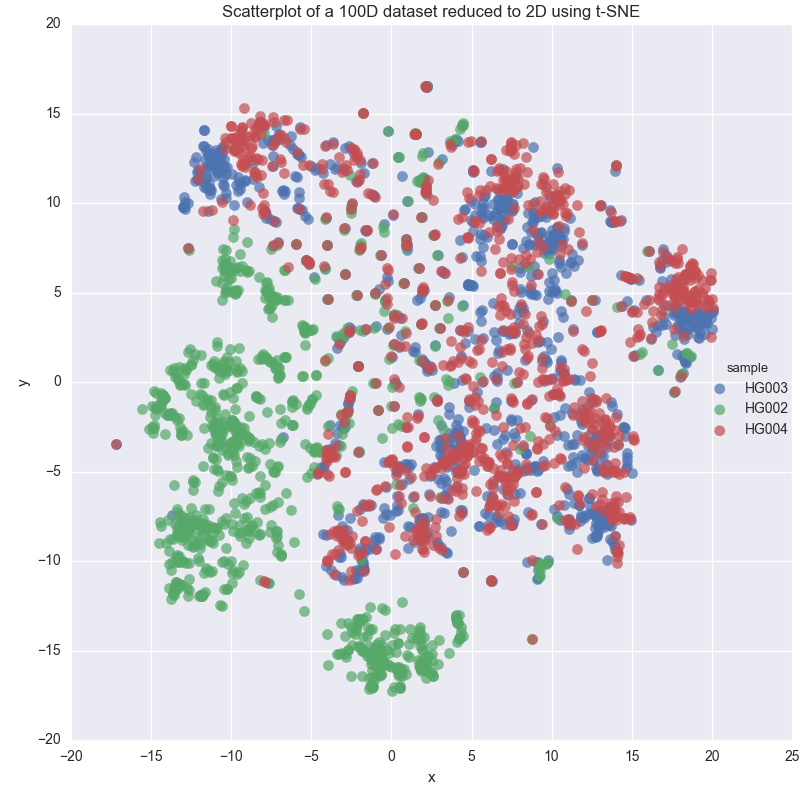TSNE: Deletions
GTCons
Size Range
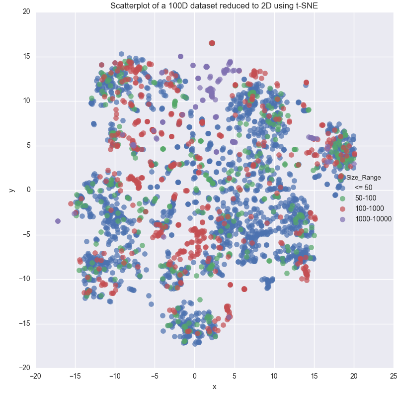TSNE: Insertions
GTCons
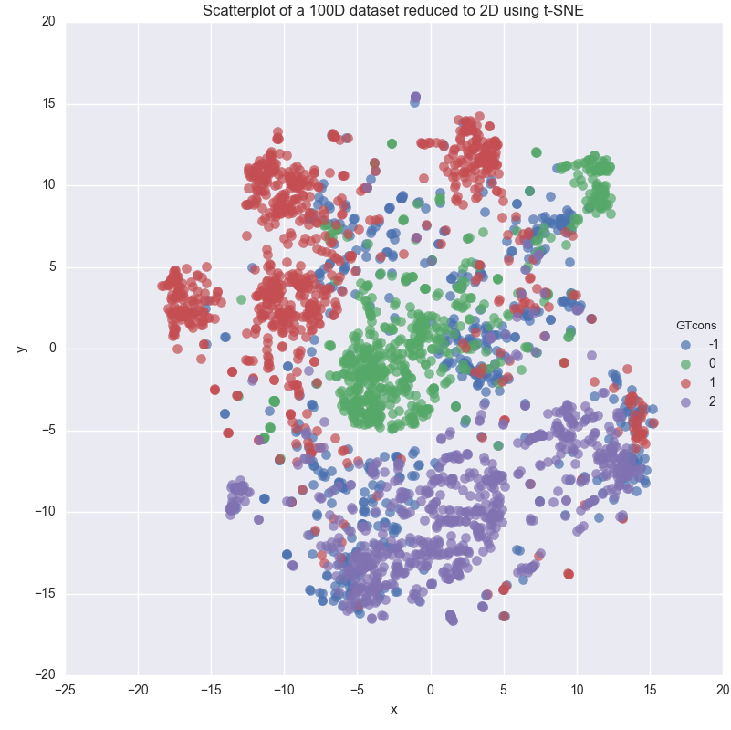Sample
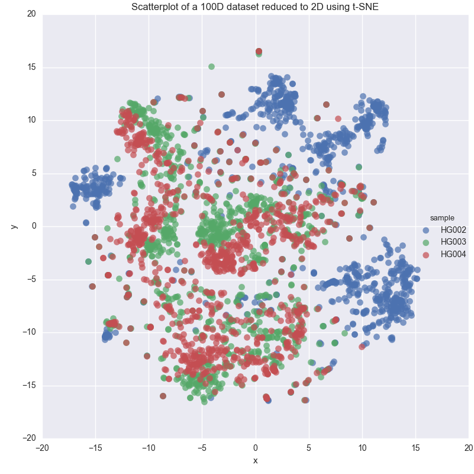TSNE: Insertions
GTCons
Size Range
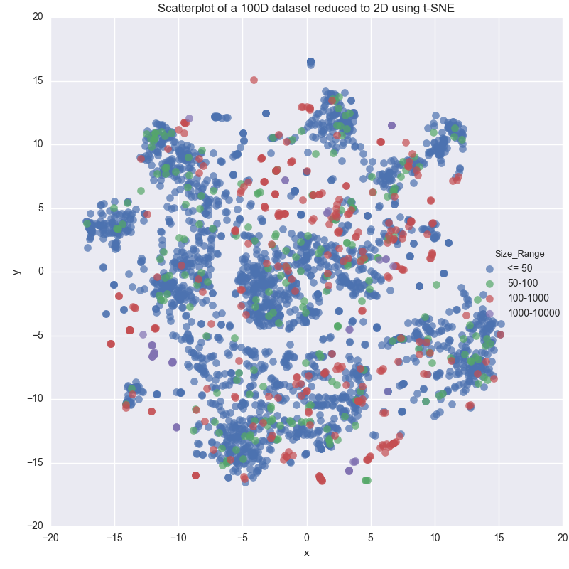Next Steps
Future Directions
- Process additional datapoints (5000 total)
- Trial manual curation: develop best practices for analyzing images
- Manual Curation: Develop an efficient way to display and distribute genomic images for analysis
- Javascript Based App: summer student
- Collect labeled datapoints
- Semi-supervised machine learning: use labeled datapoints to train semi-supervised model and assign labels to remaining datapoints
- Semi-supervised machine learning strategy: stratify based on technology?
- Include additional features: CNVthresher, Parliament, Mendelian
End
Sample Presentation
HTML Presentations Made Eas y
Created by Hakim El Hattab / @hakimel
<section>
<h3>Overview</h3>
<ul> <li>Background/Motivation</li>
<li>Data Analysis Pipeline</li>
<li>Results</li>
<li>Future Direction</li>
</section>